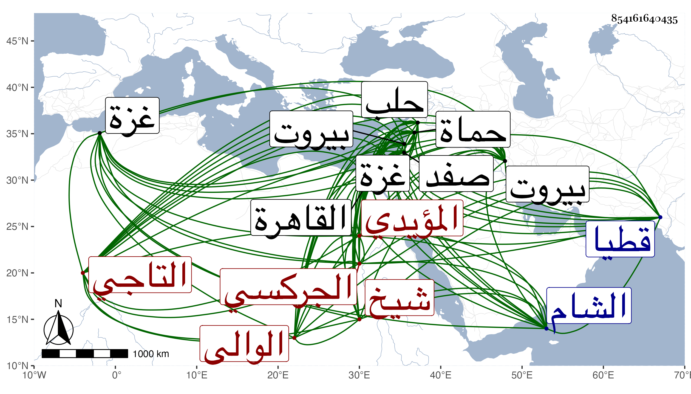

0902Sakhawi.DawLamic.ITO20230111-ara1.EIS1600.854161640435
Biography ID: 854161640435
220
جانبك التاجي نسبة للتاج الوالي الجركسي المؤيدي شيخ . صار خاصكيا بعد شيخ إلى أن استنابه الظاهر في بيروت وأثرى فتحول إلى غزة ثم صفد ثم حماة كل ذلك بالبذل ثم حلب إلى أن عزله الظاهر خشقدم في سنة ثمان وستين ليكون على أقطاع برد بك البشمقدار حاجب الحجاب بالقاهرة ، ولم يلبث أن تمرض أياما قبل خروجه منها وبعد تأهبه ثم مات بدار السعادة منها في جمادى الثانية من السنة وهو في عشر السبعين ، وكان قد حرج إليه التقليد بنيابة الشام بعد تنم فمات وجاء العلم والقاصد المتوجه بذلك في قطيا فاستقر برسباي .
